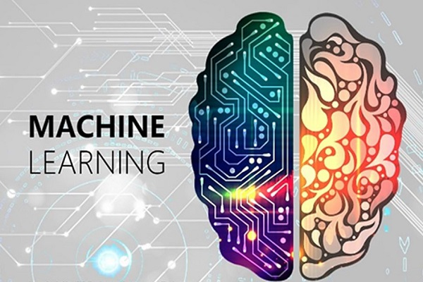

Maching Learning
Maching Learning aplicados en distintos campos
Noviembre 21, 21 / By Vittorio Carlo

Machine Learning es una disciplina científica del ámbito de la Inteligencia Artificial que crea sistemas que aprenden automáticamente. Aprender en este contexto quiere decir identificar patrones complejos en millones de datos.